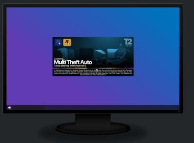

NoonMTA
...
Online játékos

Csatlakozás a NoonMTA szerverére
Légy részese Magyarország legnagyobb és legoptimalizáltabb GazdagRP közösségének!
Vágj bele a második életedbe, itt minden lehetséges!
- 1. Grand Theft Auto: San Andreas telepítése
- 2. NoonMTA launcher letöltése
- 3. Launcher indítása és csatlakozás
- 4. NoonMTA szócska begépelése a keresőbe
Kellemes időtöltést kívánunk!
Launcher letöltéseMinimum rendszerkövetelmény
- Operációs rendszer: Windows 10
- CPU: Intel Core 2 Quad CPU Q6600 @ 2.40GHz (4 CPUs) / AMD Phenom 9850 Quad-Core Processor (4 CPUs) @ 2.5GHz
- RAM: 6GB
- Videókártya: NVIDIA 9800 GT 1GB / AMD HD 4870 1GB
- Felbontás: legalább 1600x900
- Tárhely: 10GB
Ajánlott rendszerkövetelmény
- Operációs rendszer: Windows 10/11
- CPU: Intel Core i5 3470 @ 3.2GHz (4 CPUs) / AMD X8 FX-8350 @ 4GHz (8 CPUs)
- RAM: 12GB
- Videókártya: NVIDIA GTX 660 2GB / AMD HD 7870 2GB
- Felbontás: legalább 1920x1080
- Tárhely: 15GB (SSD)
Hírek
Hírek betöltése...